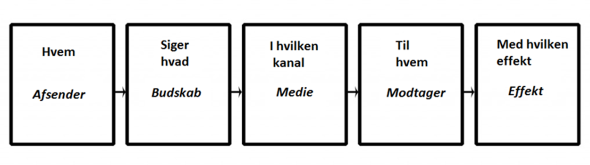
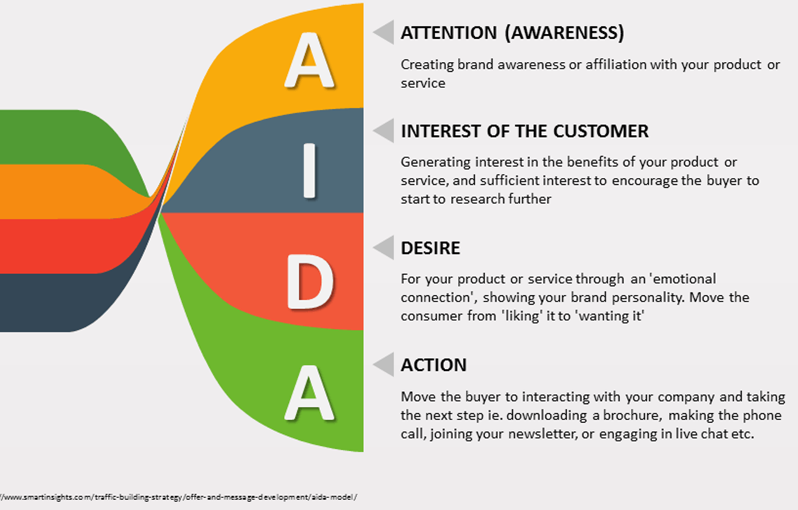
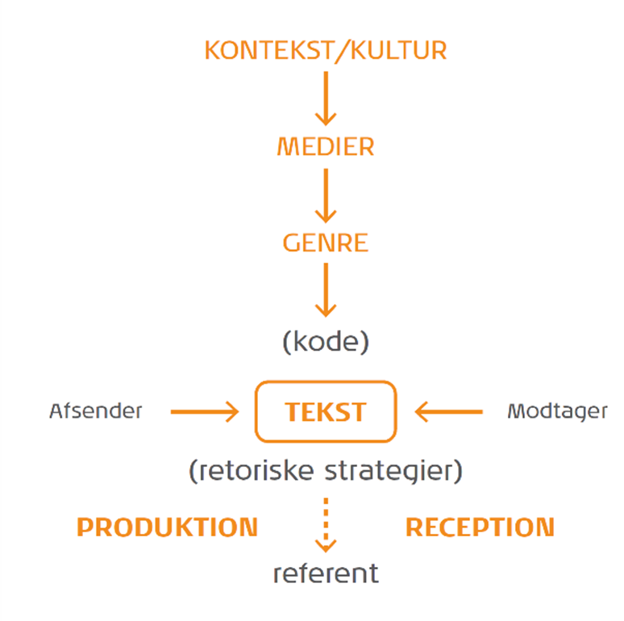
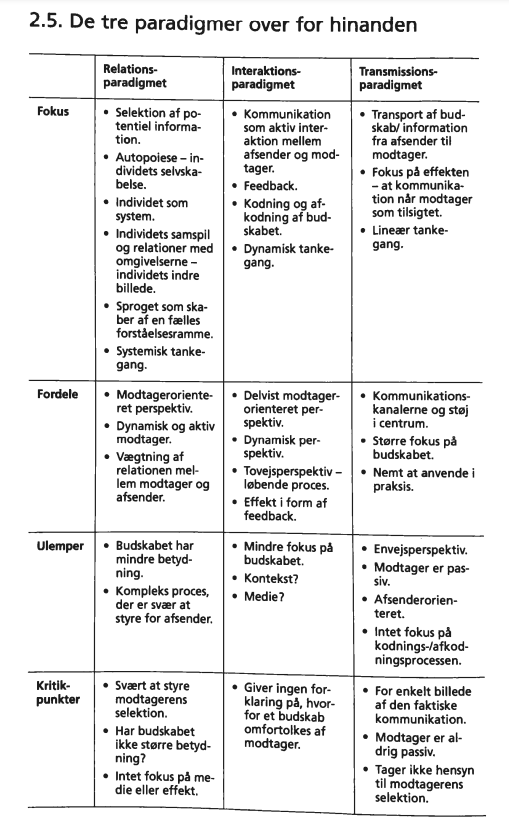

Typer af kommunikation:
Verbal
Gennem snak
Non-verbal
Kropssprog - måden man står på, hvordan man bruger sine arme, ansigts udtryk.
Skriftligt kommunikation
Kommunikation er det vi siger og gør og det kan også være det vi ikke siger og gør. Der er mange måder man kan kommunikere på som menneske. Og så kommer det også meget an på hvem vi siger det til. Alle mennesker forstår ting forskelligt. Nogle vil også forstå ting anderledes hvis man har en relation til personen eller ej. Hvor det nemt kan blive inkongruent hvis personen forstår det på den forkerte måde.
Synkron og asynkron kommunikation:
Synkron: Man kommunikere sammen med personen på samme tid. Altså ansigt til ansigt f.eks.
Asynkron: Man kommunikere med en tidsforskydning. For eksempelvis ved hjælp af mail.
5 grundantagelser om kommunikation:
1. Man kan ikke ikke-kommunikere.
2. Enhver kommunikation består af 2 dele: selve indholdet og oplysninger om det indbrydes forhold, der er mellem dem, der kommunikerer.
3. Den måde, vi udtrykker os på, og den måde, vi tolker hinandens kommunikation på, afhænger også af det forhold vi har til hinanden.
4. Mennesker kommunikerer både med en digital kode og en analog kode.
- Digital kode: hvad der siges (ord)
- Analog kode: hvordan det siges (tonefald, kropsprog, skrifttype/opsætning)
5. Kommunikationsudveksling er enten symmetrisk eller asymmetrisk afhængigt af, om den hviler på lighed eller forskel i magt.
Kommunikationsparadigmer:
Det samfundsvidenskabelige paradigme:
- Fokus på afsender
- Verden er forudsigelig
- Afsender bestemmer suverænt budskabets indhold - også hvordan modtager skal opfatte det
- Kvantitativ tilgang
- Effektorienteret
Laswells formel:
AIDA modellen:
Det humanistiske paradigme:
- Fokus på modtager
- Modtageren "medbestemmer" budskabet
- Dialog
- Budskabet og modtageres forspelse er central
- Kvalitativ tilgang - dybdeforståelse
IMK modellen:
Relationsparadigmet, Interaktionsparadigmet og Transmissionsparadigmet:
